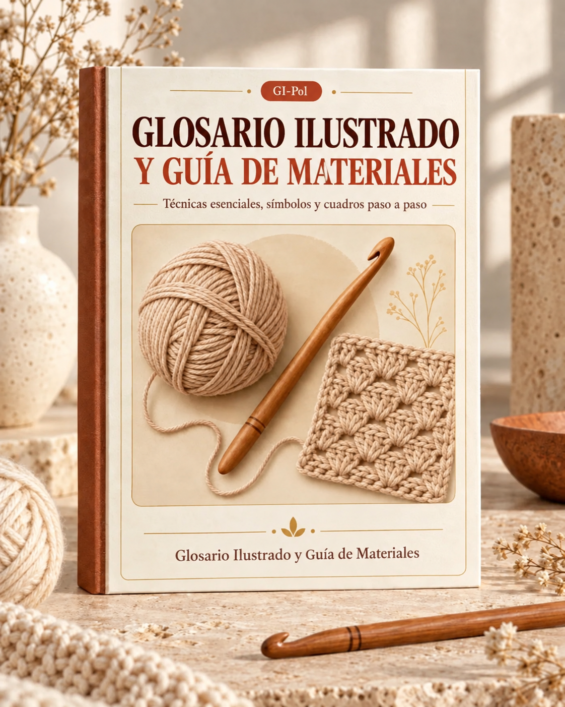

Tu referencia completa de cada punto utilizado en los 30 patrones incluidos en esta colección.
Cada punto a continuación incluye su abreviatura estándar, símbolo, descripción y las mejores situaciones para usarlo. Marca esta sección — vas a volver a ella seguido.
| Punto | Abrev. | Símbolo | Cómo Trabajarlo | Ideal Para |
|---|---|---|---|---|
| Cadena | ch | ○ | Lazada, pasar a través del aro en el gancho. | Hileras de base, cadenas de giro, espaciado |
| Punto Deslizado | sl st | • | Insertar el gancho, lazada, pasar a través del punto y del aro en el gancho en un solo movimiento. | Unir vueltas, costuras invisibles, decoración superficial |
| Punto Bajo | sc | + | Insertar el gancho, lazada y sacar un aro (2 aros en el gancho), lazada y pasar a través de ambos aros. | Tejido denso, amigurumi, posavasos, bordes ajustados |
| Medio Punto Alto | hdc | T | Lazada, insertar el gancho, lazada y sacar un aro (3 aros en el gancho), lazada y pasar a través de los 3 aros. | Ligeramente más alto que el punto bajo, buena caída, bordes de mantas |
| Punto Alto | dc | † | Lazada, insertar el gancho, lazada y sacar un aro (3 aros), lazada y pasar a través de 2 aros, lazada y pasar a través de los 2 aros restantes. | Punto más común para mantas, cojines, caminos de mesa |
| Punto Alto Doble | tr | ‡ | Lazada dos veces, insertar el gancho, lazada y sacar un aro (4 aros), luego cerrar de 2 en 2 aros (3 lazadas en total). | Patrones calados, trabajo abierto, puntos altos |
| Punto Alto Triple | dtr | ‡‡ | Lazada tres veces, insertar el gancho, lazada y sacar un aro (5 aros), luego cerrar de 2 en 2 aros (4 lazadas en total). | Diseños muy abiertos y calados, cruces decorativas |
| Punto | Abrev. | Cómo Trabajarlo | Ideal Para |
|---|---|---|---|
| Punto Alto en Relieve por el Frente | FPdc | Lazada, insertar el gancho de adelante hacia atrás alrededor del poste del punto de abajo, lazada y sacar un aro, completar como un punto alto normal. | Acanalado, patrones de trenzas, mantas texturizadas |
| Punto Alto en Relieve por Detrás | BPdc | Lazada, insertar el gancho de atrás hacia adelante alrededor del poste del punto de abajo, lazada y sacar un aro, completar como un punto alto normal. | Acanalado (se combina con FPdc), patrón canasta |
| Punto Bajo en Relieve por el Frente | FPsc | Insertar el gancho de adelante hacia atrás alrededor del poste del punto de abajo, lazada y sacar un aro, lazada y pasar a través de ambos aros. | Textura sutil, terminaciones, acanalado de bajo perfil |
| Punto Bajo en Relieve por Detrás | BPsc | Insertar el gancho de atrás hacia adelante alrededor del poste del punto de abajo, lazada y sacar un aro, lazada y pasar a través de ambos aros. | Textura inversa, se combina con FPsc para acanalado |
| Punto | Abrev. | Cómo Trabajarlo | Ideal Para |
|---|---|---|---|
| Palomita (Popcorn) | pop | Trabajar 5 puntos altos en el mismo punto, retirar el gancho del aro, insertar el gancho en el primer punto alto del grupo, tomar el aro suelto y pasarlo a través. Hacer 1 cadena para cerrar. | Textura 3D llamativa, frentes de cojines, mantas de impacto |
| Bolita (Bobble) | bo | Trabajar 5 puntos altos en el mismo punto, pero detener cada punto alto con 2 aros restantes (6 aros en el gancho). Lazada y pasar a través de los 6 aros de una vez. | Puntos en relieve, patrones de lunares, texturas acogedoras |
| Punto Puff | puff | [Lazada, insertar el gancho, sacar un aro] 3–5 veces en el mismo punto (7–11 aros en el gancho). Lazada y pasar a través de todos los aros. Hacer 1 cadena para cerrar. | Textura suave y acolchada, mantas de bebé, cojines |
| Abanico (Shell) | sh | Trabajar múltiples puntos (normalmente 5 puntos altos) en el mismo punto o espacio. La forma de abanico se genera naturalmente. | Bordes elegantes, patrones de mantas, caminos de mesa |
| Punto V | V-st | Trabajar (1 punto alto, 1 cadena, 1 punto alto) todo en el mismo punto o espacio. | Tejido ligero y aireado, mantas de primavera/verano, manteles individuales |
| Racimo (Cluster) | cl | Trabajar 3–5 puntos altos en varios puntos, dejando el último aro de cada punto alto en el gancho (4–6 aros), luego lazada y pasar a través de todos los aros. | Dar forma, patrones calados, terminaciones decorativas |
| Picot | picot | Hacer 3 cadenas, punto deslizado en la primera cadena. | Terminaciones decorativas, bordes delicados, carpetas |
| Punto / Técnica | Abrev. | Cómo Trabajarlo | Ideal Para |
|---|---|---|---|
| Anillo Mágico | MR | Enrollar el estambre alrededor de los dedos para formar un aro. Insertar el gancho a través del aro, lazada y sacar un aro. Hacer 1 cadena. Trabajar la cantidad de puntos requeridos dentro del anillo. Jalar la cola para cerrar el centro ajustadamente. | Iniciar círculos, posavasos, cojines redondos, mandalas |
| Punto Bajo 2 Juntos | sc2tog | Insertar el gancho en el siguiente punto, sacar un aro. Insertar el gancho en el punto siguiente, sacar un aro (3 aros). Lazada y pasar a través de los 3 aros. | Disminuir, dar forma a curvas, bordes estrechados |
| Punto Alto 2 Juntos | dc2tog | Lazada, insertar el gancho en el siguiente punto, sacar un aro, lazada y pasar a través de 2 aros (quedan 2 aros). Repetir en el siguiente punto (quedan 3 aros). Lazada y pasar a través de los 3. | Disminuir en puntos altos, patrones chevrón |
| Punto Bajo de Base (Foundation) | fsc | Hacer 2 cadenas. Insertar el gancho en la primera cadena, sacar un aro (2 aros). Lazada y pasar a través de 1 aro (la cadena). Lazada y pasar a través de ambos aros (el punto bajo). Para cada punto subsiguiente, insertar el gancho bajo los 2 aros de la cadena recién hecha. | Hilera de base flexible, mantas, prendas |
Cómo descifrar cualquier patrón escrito de crochet con confianza.
Los patrones escritos pueden parecer un idioma extranjero la primera vez. Una vez que aprendas la notación, los leerás tan fácilmente como una receta de cocina.
ch — cadena
sl st — punto deslizado
sc — punto bajo
hdc — medio punto alto
dc — punto alto
tr — punto alto doble
dtr — punto alto triple
sk — saltar
sp — espacio
st(s) — punto(s)
yo — lazada
rep — repetir
tog — juntos
RS — lado derecho
WS — lado revés
BL — hebra trasera
FL — hebra delantera
beg — inicio
inc — aumento
dec — disminución
pm — colocar marcador
FO — rematar
MC — color principal
CC — color de contraste
| Símbolo | Significado | Ejemplo |
|---|---|---|
| * … * | Repetir todo lo que está entre los asteriscos la cantidad de veces indicada. | *sc en los sig. 3 pts, 2 sc en el sig. pt* repetir 6 veces = trabajar la secuencia 6 veces en total |
| [ … ] | Repetir el grupo dentro de los corchetes. A menudo intercambiable con asteriscos. | [dc, ch 1, dc] en el mismo esp = un punto V trabajado en un solo espacio |
| ( … ) | Puntos trabajados en el mismo punto o espacio, O información aclaratoria. | (2 dc, ch 2, 2 dc) en el esp de esquina = los 6 elementos van en el mismo espacio de esquina |
| ( N ) al final | Conteo total de puntos para esa hilera o vuelta. | Hilera 5: sc en cada pt — (48) = deberías tener 48 puntos al terminar |
La muestra de tensión te dice cuántos puntos e hileras caben en un cuadrado de 10 cm (4″) usando el estambre y el gancho recomendados. Si tu tensión no coincide:
Para artículos de decoración del hogar como fundas de cojín y manteles individuales, la muestra de tensión importa más que para las mantas porque necesitan ajustarse a un tamaño específico (un relleno de almohada, una mesa).
Muchos patrones requieren una cadena de base que sea múltiplo de cierto número. Por ejemplo, “Múltiplo de 4 + 3” significa que tu cadena inicial debe ser divisible entre 4, y luego agregas 3 cadenas extra (ej., 23, 27, 31, 35). Las cadenas extra normalmente corresponden a la cadena de giro.
| Término US | Abrev. US | Equivalente UK | Abrev. UK |
|---|---|---|---|
| Slip stitch | sl st | Slip stitch | ss |
| Single crochet | sc | Double crochet | dc |
| Half double crochet | hdc | Half treble crochet | htr |
| Double crochet | dc | Treble crochet | tr |
| Treble crochet | tr | Double treble crochet | dtr |
| Double treble crochet | dtr | Triple treble crochet | trtr |
| Gauge | — | Tension | — |
| Skip | sk | Miss | miss |
| Yarn over | yo | Yarn over hook | yoh |
Todo lo que necesitas saber para elegir el estambre correcto para proyectos de decoración del hogar.
El estambre que elijas determina cómo se ve, se siente y se mantiene tu pieza terminada con el tiempo. Para artículos que se usan y lavan regularmente, esta elección es especialmente importante.
| Grosor | Símbolo CYC | Puntos por 4″ (sc) | Gancho Recomendado (mm) | Gancho Recomendado (US) | Usos Comunes |
|---|---|---|---|---|---|
| 0 — Encaje | 𝟎 | 32–42 | 1.5–2.25 | 6–B/1 | Carpetas, tapetes delicados para mesa |
| 1 — Superfino | 𝟏 | 21–32 | 2.25–3.5 | B/1–E/4 | Caminos de mesa finos, terminaciones de encaje |
| 2 — Fino | 𝟐 | 16–20 | 3.5–4.5 | E/4–7 | Manteles individuales ligeros, sujetadores de cortinas |
| 3 — DK / Ligero | 𝟑 | 12–17 | 4.5–5.5 | 7–I/9 | Fundas de cojín, cobijas ligeras |
| 4 — Worsted / Mediano | 𝟒 | 11–14 | 5.5–6.5 | I/9–K/10.5 | Mantas, cojines, organizadores, la mayoría de la decoración del hogar |
| 5 — Grueso | 𝟓 | 8–11 | 6.5–9 | K/10.5–M/13 | Mantas gruesas, canastas organizadoras |
| 6 — Súper Grueso | 𝟔 | 6–9 | 9–16 | M/13–Q | Mantas tejidas con los brazos, canastas grandes |
| 7 — Jumbo | 𝟕 | 5 o menos | 16+ | Q y más grandes | Pufs gigantes de piso, tapetes gruesos |
| Fibra | Ventajas | Desventajas | Mejores Usos en Decoración |
|---|---|---|---|
| Algodón | Excelente definición de puntos, lavable a máquina, transpirable, no hace bolitas | Menos elástico, puede sentirse rígido al principio, más pesado | Posavasos, manteles individuales, caminos de mesa, artículos de cocina, trapos |
| Acrílico | Económico, gran variedad de colores, lavable a máquina, ligero, hipoalergénico | Puede hacer bolitas con uso intenso, menos transpirable, se derrite con el calor | Mantas, fundas de cojín, artículos decorativos que se manipulan menos |
| Lana | Cálida, naturalmente elástica, bonita caída, opción de fieltrado | Puede encoger en agua caliente, puede afieltrarse sin querer, algunas personas son alérgicas | Cobijas de invierno, canastas afieltradas, fundas de cojín (con protección del relleno) |
| Bambú | Tacto sedoso, bonita caída, naturalmente antibacterial, ecológico | Se divide fácilmente en el gancho, se estira con el peso, resbaloso | Cobijas ligeras, fundas decorativas de cojín |
| Mezcla Algodón-Acrílico | Combina la definición de puntos del algodón con la suavidad del acrílico, fácil cuidado | Más caro que el acrílico puro | Versátil — funciona para casi todos los proyectos de decoración del hogar |
| Poliéster | Duradero, mantiene la forma, secado rápido | Le falta tacto natural, puede rechinar en el gancho | Cojines de exteriores, artículos que requieren lavado intenso |
Las cantidades de estambre varían según el patrón de puntos, el tamaño del gancho y tu tensión. Usa estas guías como estimaciones iniciales:
| Tipo de Proyecto | Yardas Aproximadas (Grosor Worsted) |
|---|---|
| Posavasos (10 cm / 4″ de diámetro) | 15–25 yardas |
| Mantel individual (30 × 45 cm / 12 × 18″) | 100–150 yardas |
| Camino de mesa (30 × 120 cm / 12 × 48″) | 250–400 yardas |
| Funda de cojín (45 × 45 cm / 18 × 18″) | 200–350 yardas (frente + espalda) |
| Manta de bebé (75 × 100 cm / 30 × 40″) | 800–1,200 yardas |
| Cobija (130 × 180 cm / 50 × 70″) | 2,000–3,000 yardas |
| Canasta organizadora pequeña | 150–250 yardas |
Regla de oro: siempre compra una madeja extra. Quedarte sin estambre a mitad de proyecto y encontrar el mismo lote de teñido es muchas veces imposible. Siempre puedes devolver las madejas sin usar con tu ticket.
Más allá del gancho: todas las herramientas que necesitas para crochet de decoración con calidad profesional.
Puedes empezar a tejer con solo un gancho y estambre, pero las herramientas adecuadas hacen que cada proyecto sea más rápido, más prolijo y más disfrutable.
| Material | Sensación | Ideal Para | Rango de Precio |
|---|---|---|---|
| Aluminio | Suave, rápido, fresco al tacto | Tejido general, estambre acrílico y algodón | $ |
| Bambú / Madera | Cálido, ligero agarre, liviano | Estambres resbalosos (seda, bambú), personas que prefieren un ritmo más lento | $$ |
| Plástico | Muy ligero, flexible | Ganchos grandes (9 mm+), opción económica | $ |
| Acero | Delgado, muy suave, preciso | Crochet con hilo fino, carpetas, trabajo de encaje (tamaños 0.6–2.0 mm) | $ |
| Ergonómico (grip de goma) | Mango acolchado, reduce la fatiga de manos | Sesiones largas, personas con artritis o dolor de manos | $$–$$$ |
| Métrico (mm) | Tamaño US | Tamaño UK / Canadiense |
|---|---|---|
| 2.0 | — | 14 |
| 2.25 | B/1 | 13 |
| 2.5 | — | 12 |
| 2.75 | C/2 | 11 |
| 3.0 | — | 10 |
| 3.25 | D/3 | 10 |
| 3.5 | E/4 | 9 |
| 3.75 | F/5 | 9 |
| 4.0 | G/6 | 8 |
| 4.5 | 7 | 7 |
| 5.0 | H/8 | 6 |
| 5.5 | I/9 | 5 |
| 6.0 | J/10 | 4 |
| 6.5 | K/10.5 | 3 |
| 7.0 | — | 2 |
| 8.0 | L/11 | 0 |
| 9.0 | M/13 | 00 |
| 10.0 | N/15 | 000 |
| 12.0 | P/16 | — |
| 15.0 | P/Q | — |
| 16.0 | Q | — |
| 19.0 | S | — |
| Herramienta | Qué Hace | Por Qué la Necesitas |
|---|---|---|
| Agujas Laneras | Agujas de ojo grande y punta roma para esconder hebras y coser piezas | Esencial para terminar cada proyecto de manera prolija |
| Marcadores de Puntos | Pequeños clips o anillos que marcan un punto específico | Llevar la cuenta del primer punto de una vuelta, marcar repeticiones del patrón, contar puntos |
| Cinta Métrica | Cinta flexible para medir muestras de tensión y piezas terminadas | Precisión para artículos que necesitan calzar (fundas de cojín, manteles individuales) |
| Contador de Hileras | Contador mecánico o digital que presionas después de cada hilera | Lleva la cuenta de hileras en proyectos largos como mantas |
| Tijeras Afiladas | Tijeras pequeñas y afiladas para cortar estambre limpiamente | Un corte limpio facilita mucho el esconder las hebras |
| Alfileres de Bloqueo | Alfileres en T o alfileres de bloqueo resistentes al óxido | Mantienen tu proyecto en forma durante el bloqueo |
| Tapetes de Bloqueo | Cuadros de espuma entrelazados con líneas de cuadrícula | Superficie plana para fijar y secar proyectos bloqueados |
| Botella Rociadora | Rociador de niebla fina para bloqueo húmedo y por rociado | Distribución uniforme de humedad sin empapar |
Convierte un buen proyecto en una pieza de apariencia profesional con estas habilidades esenciales de acabado.
La diferencia entre algo casero y algo artesanal está en el acabado. Estas técnicas toman minutos pero transforman el resultado final.
El bloqueo es el proceso de dar forma a tu pieza terminada de crochet a sus dimensiones finales usando humedad y/o calor. Empareja los puntos, abre los patrones de encaje y hace que los bordes queden planos.
| Método | Cómo | Ideal Para | Tiempo de Secado |
|---|---|---|---|
| Bloqueo Húmedo | Remojar la pieza en agua tibia por 15–20 minutos. Exprimir suavemente (nunca retorcer). Colocar plana sobre tapetes de bloqueo, fijar con alfileres a las dimensiones deseadas, dejar secar al aire completamente. | Artículos de algodón, encaje, cualquier cosa que necesite un reajuste significativo de forma | 12–24 horas |
| Bloqueo con Vapor | Fijar la pieza con alfileres al tapete de bloqueo. Sostener una plancha de vapor a 2–3 cm sobre el tejido (nunca tocar). Dejar que el vapor penetre, luego dejar secar fijada. | Estambre acrílico (fija la forma permanentemente — se le dice “matar” el acrílico), lana | 1–4 horas |
| Bloqueo por Rociado | Fijar la pieza con alfileres al tapete de bloqueo. Rociar uniformemente con agua usando una botella rociadora. Dejar secar completamente mientras está fijada. | Artículos que necesitan un ajuste ligero, retoques rápidos, fibras delicadas | 4–8 horas |
| Método | Cómo | Resultado | Ideal Para |
|---|---|---|---|
| Costura de Sobrehilado (Whip Stitch) | Sostener las piezas juntas, lados revés hacia afuera. Enhebrar aguja lanera. Pasar a través de ambas piezas de atrás hacia adelante, repetir a lo largo del borde. | Costura visible, reborde ligeramente elevado | Uniones rápidas, espaldas de cojines, cuadros de la abuela |
| Punto Colchón (Mattress Stitch) | Sostener las piezas lado a lado, lados derechos hacia arriba. Coser a través de puntos correspondientes en cada pieza en patrón de zigzag. | Costura casi invisible | Fundas de cojín, paneles de mantas, cualquier cosa visible por el lado derecho |
| Unión con Punto Deslizado | Sostener las piezas juntas, insertar el gancho a través de ambas capas, lazada y pasar a través de todos los aros. Repetir a lo largo del borde. | Reborde decorativo, rápido | Cuadros de la abuela, mantas de motivos, costuras decorativas |
| Unión con Punto Bajo | Sostener las piezas juntas, hacer punto bajo a través de ambas capas a lo largo del borde. | Fuerte, reborde visible | Canastas organizadoras, artículos que necesitan fuerza estructural |
| Adición | Cómo Fijarla | Consejos |
|---|---|---|
| Botones | Coser con hilo del mismo color a través del tejido. Reforzar con un pequeño trozo de fieltro detrás del botón en tejidos flojos. | Hacer presillas de botones con cadenas durante la vuelta de borde. Probar el ajuste antes de terminar. |
| Cierres | Fijar el cierre con alfileres primero, luego coser a mano con puntada atrás usando hilo del mismo color. | Úsalos para fundas de cojín. Un cierre facilita sacar el relleno para lavar. |
| Forro de Tela | Cortar tela de forro 1 cm más grande que la pieza de crochet en todos los lados. Doblar los bordes hacia adentro, fijar con alfileres y coser a mano con punto deslizado. | Agrega estructura a bolsas y organizadores. Evita que los objetos se asomen por los patrones abiertos. |
| Base Antideslizante | Aplicar tela antideslizante o forro de anaquel al revés de posavasos y manteles individuales con pegamento textil o costura a mano. | Esencial para posavasos en superficies pulidas. Prueba el pegamento en una muestra primero. |
Problemas comunes de crochet, qué los causa y cómo solucionarlos cada vez.
Todos los que tejen crochet han enfrentado estos problemas. Conocer la causa es la mitad de la solución. Esta sección te ahorrará horas de frustración y de destejer.
Ahora tienes una referencia completa de cada punto, material y técnica en esta colección. Ten esta guía a tu lado mientras trabajas los 30 patrones — vas a encontrarte regresando a ella una y otra vez.
Abre el libro principal de patrones y elige tu primer proyecto. Empieza con algo pequeño — un posavasos o un mantel individual — para calentar, y luego avanza hacia fundas de cojín y mantas.
¡Feliz tejido!